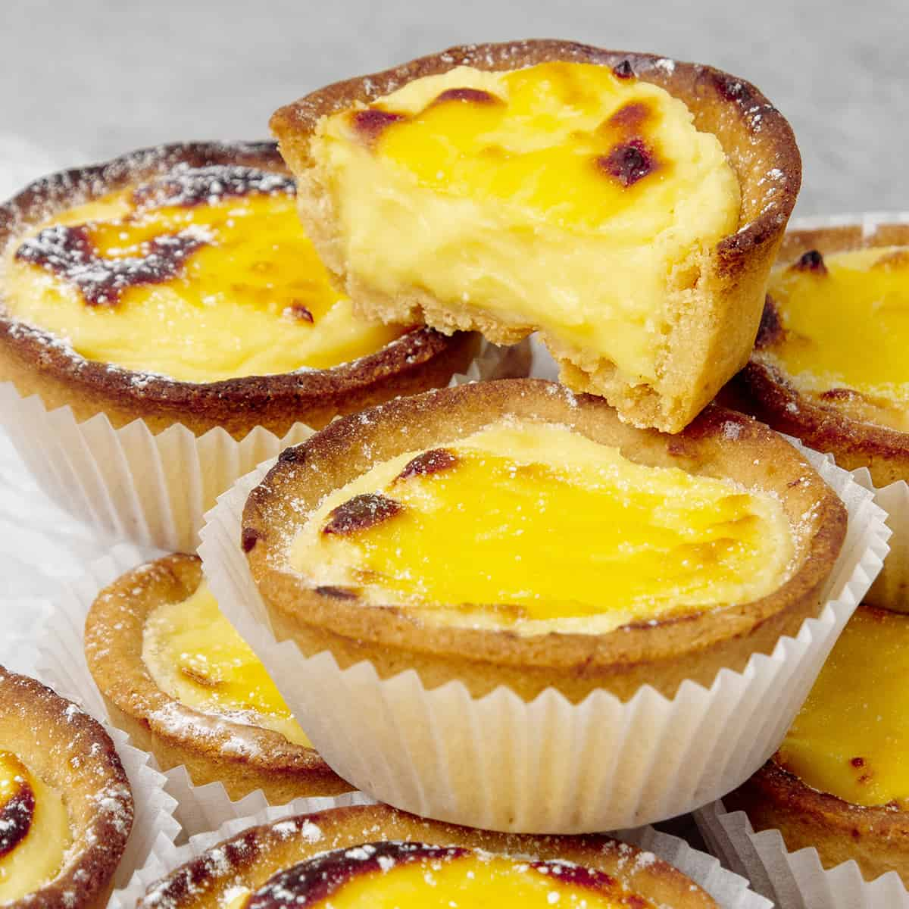

Hokkaido Baked Cheese Tarts

Description
Hokkaido Baked Cheese Tarts are the ultimate rich and creamy bite-sized Japanese desserts with crunchy shortcrust tart base and distinct sweet and savory cheesy filling. The Japanese Cheese tarts recipe is made using my popular Pâte Sablée aka Sweet shortcrust pastry tart that is filled with a combination of creamy, sweet, and savory dairy and cheese products such as heavy cream, Philadephia cream cheese, and parmesan cheese.
Ingredients
90g of icing sugar
230g of pastry flour can be replaced with all purpose flour
30g almond flour
Pinch of salt
110g Unsalted butter 82% fat content, use it very cold, cut into chunks
50g Egg approx 1 egg
For the cheese filling
- 230 g Cream cheese use full-fat, eg. Philadephia
- 50 g Parmesan cheese finely grated
- 45 g Unsalted butter 82% fat
- 50 g Whole milk
- 50 g Heavy cream
- 45 g Icing sugar
- 2 egg yolk
- 15 g Corn starch
Directions
- Measure and cut butter into chunks and place it into the freezer for a few minutes
- Sift together dry ingredients; flour, icing sugar, almond, salt
- Add very cold butter chunks into the dry ingredients, and rub the mixture between your hands until it becomes a sand-like consistency
- Add egg into the mixture and mix with your hands just until the dough comes together
- Knead the dough with the palm of your hand for a minute or two, just until the dough becomes smooth. Do not over-knead the dough and do not use mixer, neither a food processor
- If the dough is too warm and sticky, place it into the fridge for 10-15 minutes first. Otherwise, continue with rolling the dough out into 2mm thickness between two Silicone baking mat.
- Place the dough into the freezer for 15 min in between the two Silicone baking mat. Do not remove the mat at this point
- Prepare your muffin pan or 12 mini tart molds
- Take the dough sheet out from the freezer, remove the top of the silicone mat, and cut out circles, using a cookie cutter
- With your fingers, press the dough circles into the tin one by one. Make sure that you work with a dough that is cold enough to be able to handle.
- Once you are ready with all the tart shells, poke them with a fork, then freeze the dough for 1 hour before baking
- Pre-heat oven to 180C / 356F (no fan) while the dough is in the freezer.
- Bake for 15 min in the muffin pan. After 15 minutes the pastry cases will somewhat contract within the pan so you will be able to easily remove them
- Once the tart cases are removed from the muffin pan to a baking sheet, bake for further 10-15 minutes at 160C / 320F (no fan). I suggest baking them in this second step upside down so the bottom of the tart case is up and can fully be baked until golden brown.
- They are ready when they achieve an even golden color, in about 25-30 minutes overall
Filling
- In a large enough bowl with the help of a hand whisk, whip together sugar and egg yolk until slightly fluffy for about 1-2 minutes the whisk in corn starch until thoroughly incorporated and have a smooth paste
- Heat milk, cream, butter, Philadephia cheese, and grated parmesan in a saucepan on low-medium heat, then remove it as soon as the ingredients melt together. By this time, the mixture probably will be simmering
- Pour the warm cheese mixture over the egg yolk mixture slowly while whisking vigorously with a hand whisk.
- Pour the mixture back into the saucepan and cook on medium heat for a few minutes until it thickens
- Place the filling into a shallow bowl and cover the entire surface with plastic wrap to avoid skin forming on top. Chill it for an hour before using it
Assemble
- Pre-heat oven to 220C / 428F (no fan)
- Fill each tart shells with the cheese filling using a piping bag
- Whisk one egg with a splash of water and apply a light egg wash on top of the filling
- Pop the tarts bake to the oven and bake for 5-10 minutes or until the top slightly caramelizes
- Serve the baked cheese tarts warm, room temperature or chilled
Homepage